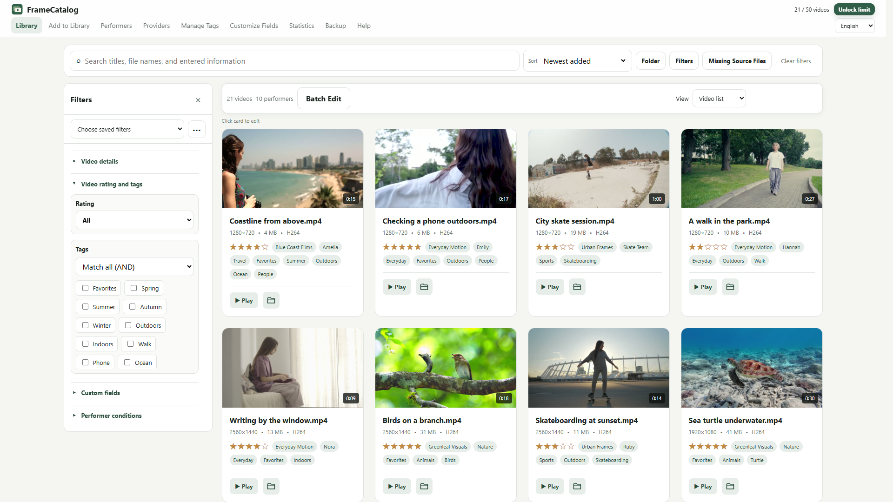
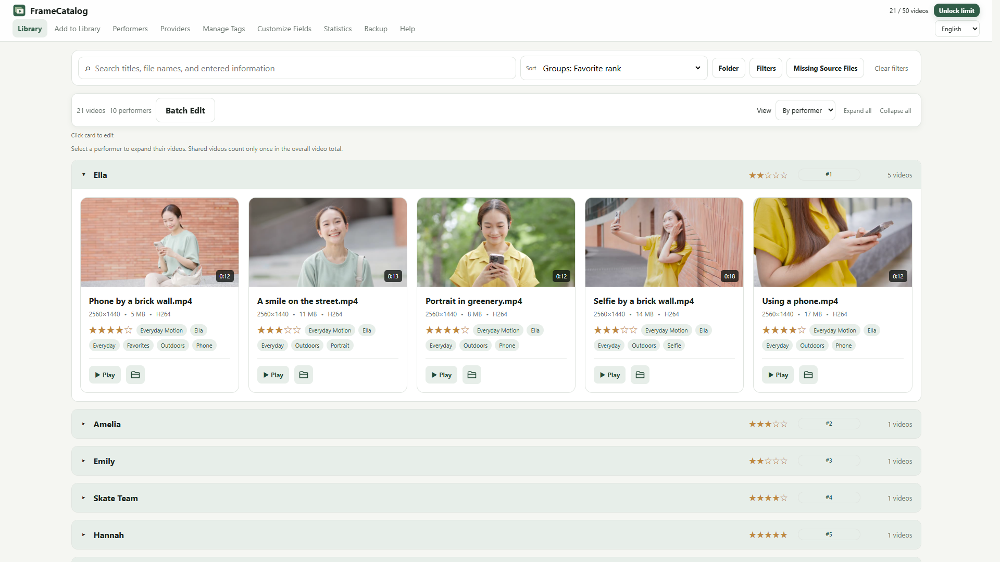
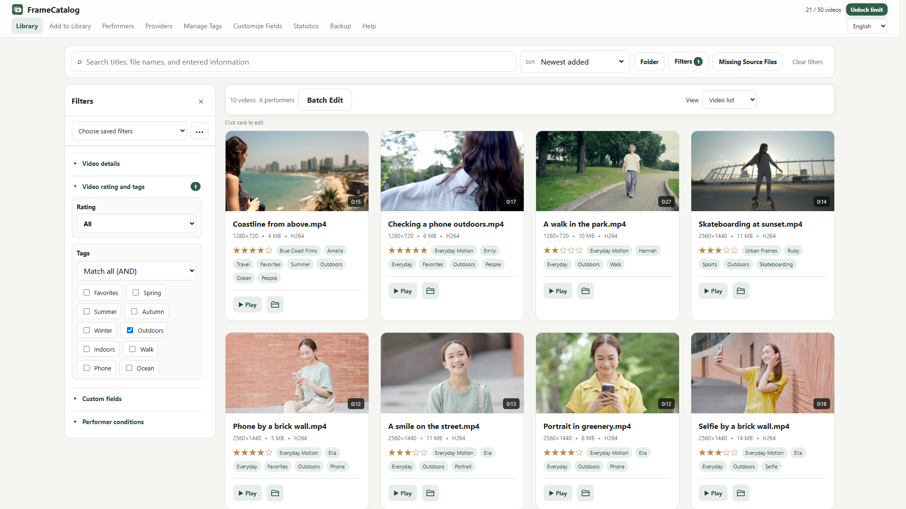

Manage videos on your PC
Select files or folders to add videos in formats such as MP4, MOV, MKV, and AVI. FrameCatalog reads details such as duration and resolution while keeping your files in place.
FrameCatalog is a local video organizer for Windows 10 and 11. Create your own fields for videos, performers, and providers, then use them to filter and explore your collection. Your video files stay where they are.
 Free for up to 50 videos
Free for up to 50 videosSelect files or folders to add videos in formats such as MP4, MOV, MKV, and AVI. FrameCatalog reads details such as duration and resolution while keeping your files in place.
Browse thumbnails to see what is in your library. Hover over a thumbnail for a short preview without opening each video. Choose any point in a video for its thumbnail.
Create text, date, and choice fields for the information you want to keep. Link a performer to multiple videos, then record details that vary from clip to clip in separate fields.
Combine AND or OR tag matching with performer, recording date, resolution, and other filters. Save the filters you use often and apply them again later.
In a typical video organizer, you can tag a video with “Performer A,” “Performer B,” “Long hair,” and “Short hair.” Those tags alone don’t tell you which performer has long hair.
In FrameCatalog, you can record details for each performer in each video. Set Performer A’s hairstyle to Long hair and Performer B’s to Short hair, then filter for videos where Performer A has long hair. You can do the same for clothing and other details that change from video to video.
Keep profile information, such as a performer’s birth date and rating, separate from their hairstyle or outfit in a particular video. You can update those per-video details for the same performer across several selected videos. When both dates are available, FrameCatalog calculates and displays the performer’s age at recording.
The same performer or provider may be credited under different names or spellings from one video to the next. Save those alternate names under one performer or provider in FrameCatalog. Then search using whichever name you remember to find their videos without renaming your files.
Alongside built-in details such as title, duration, and resolution, you can create your own fields for videos, performers, and providers. Choose both the field name and how you enter its information. Use text for filming locations, dates for purchases, a list of choices for genres, and long text for impressions. Pick the format that fits what you want to record and build a video database of your own.
See how your entire library or filtered results break down by performer, tag, or custom field, with counts and percentages. For example, group your videos by genre and select a genre in the breakdown to open the matching videos.

Import video entries, tags, star ratings, and comments from a WhiteBrowser .wb library file. You can also assign tags to performers or providers in bulk. After import, FrameCatalog generates thumbnails and hover previews from the original video files.
In FrameCatalog 1.3.17.0 or later, open Add to Library, find Import from WhiteBrowser, and enter the full path to your .wb file. Review the number of videos before confirming. The free edition can import when the resulting library contains 50 videos or fewer. See pricing
Select individual files or add an entire folder, with the option to include subfolders. FrameCatalog keeps the original files in place, reads details such as duration and resolution, and generates thumbnails.
FrameCatalog can read recording dates and times when they are available in the video metadata. The import results show which files could not be added.
Hover over a thumbnail to play a short, silent preview. Open the original in your usual player when you want to watch the whole video.
You can replace an automatically generated thumbnail. Enter a time or move the slider, check the frame, and choose the scene you want to use.
Create fields for videos, performers, and providers. Use text for filming locations, a date for purchases, a choice field for genres, and long text for notes. Append to existing notes across multiple videos with batch editing.
Save alternate names for each performer or provider so you can find their videos under any of those names. Keep a performer’s ratings, ranking, and birth date separate from details that change from video to video. When both the birth date and recording date are available, FrameCatalog displays the performer’s age at recording.

View statistics for your entire library or just the filtered results. See breakdowns by performer, tag, or custom field as counts or percentages. Select a breakdown to open the matching videos.
Search by file name or entered information. Combine tags, ratings, recording date ranges, resolution, duration, and folders. Match all selected tags with AND, or any of them with OR.
Find videos by a performer’s name or alias. Name and save the filters you use often so you can apply them again later.

If you move a video while reorganizing your storage, point its library entry to the new location. If you get a higher-quality copy of the same video, replace the file in that entry. Your tags, ratings, custom fields, and notes carry over, so you can keep the work you put into organizing it.
Back up your library entries, custom fields, thumbnails, previews, and display settings together, and restore them when needed. Back up your original video files separately.
FrameCatalog supports 64-bit (x64) Windows PCs. The app is available in English, Japanese, and Simplified Chinese.
Library information, thumbnails, and previews are stored on your PC. Larger collections take longer to add and require free disk space for previews and other generated files.
Windows must support H.265 (HEVC) to generate thumbnails and previews from HEVC videos. Depending on your setup, you may need to install HEVC Video Extensions separately from Microsoft Store. The extension may require a separate purchase.
Video compatibility depends on the internal codec and profile, as well as your PC’s capabilities, not just the file extension. MPEG-1, MPEG-2, and MPEG-4 Visual use bundled video processing components. H.264, H.265 (HEVC), and VC-1/WMV9 use Windows video features. Support for every video format is not guaranteed. Before purchasing the upgrade, use the free version to test importing, thumbnails, and previews with your own videos.
Adding a video does not convert or overwrite the original file. Previews are short and silent. Click Play to open the full video in your usual player.
No. Register videos from your PC or external drives and manage them in their original locations.
Find videos across folders using ratings, tags, performers and custom fields. Combine AND or OR tag filters with resolution, duration and recording date.
Hover over a thumbnail to play a short, silent preview. For full-length playback, the play button opens your usual video player.
Add up to 50 videos for free and test thumbnails and previews with your own files. A one-time purchase removes the library size limit. There is no monthly subscription.
Download it from Microsoft Store for a 64-bit (x64) PC running Windows 10 or 11.
For questions about FrameCatalog or to report a problem, please email us.
orivelaworks@gmail.comPlease include your app version, Windows version, the steps that led to the problem, and any error message you saw.
Do not send passwords or payment details. If you attach a screenshot, hide any personal information or private video names.
How we handle your data